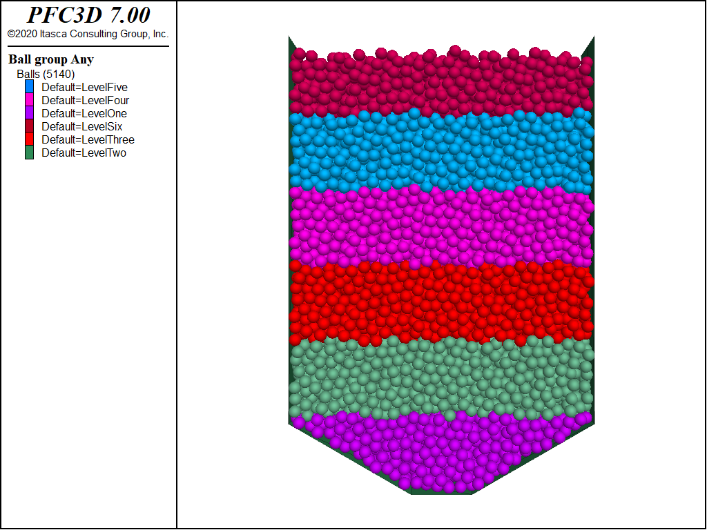
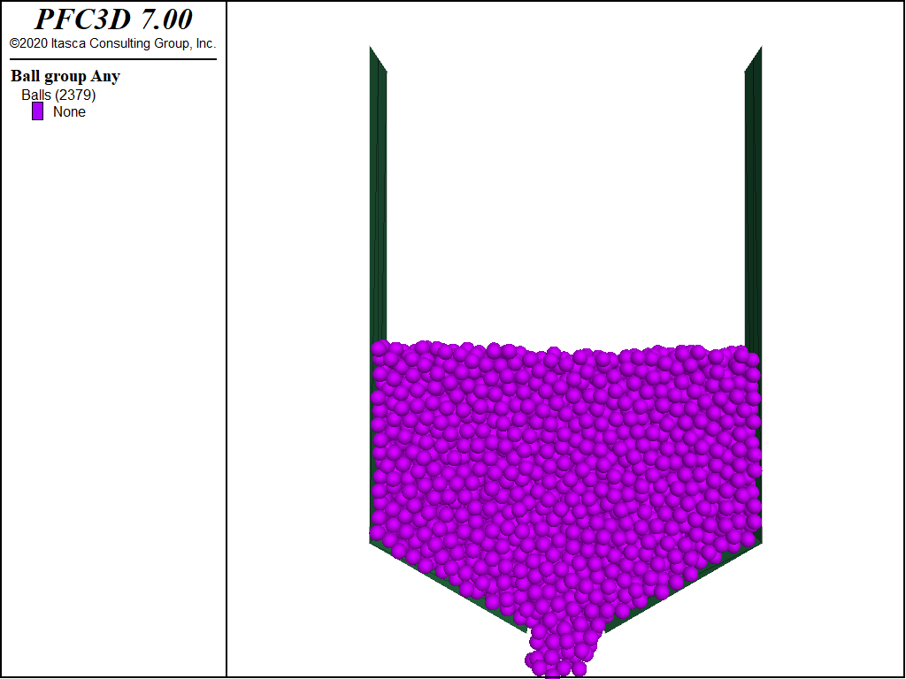
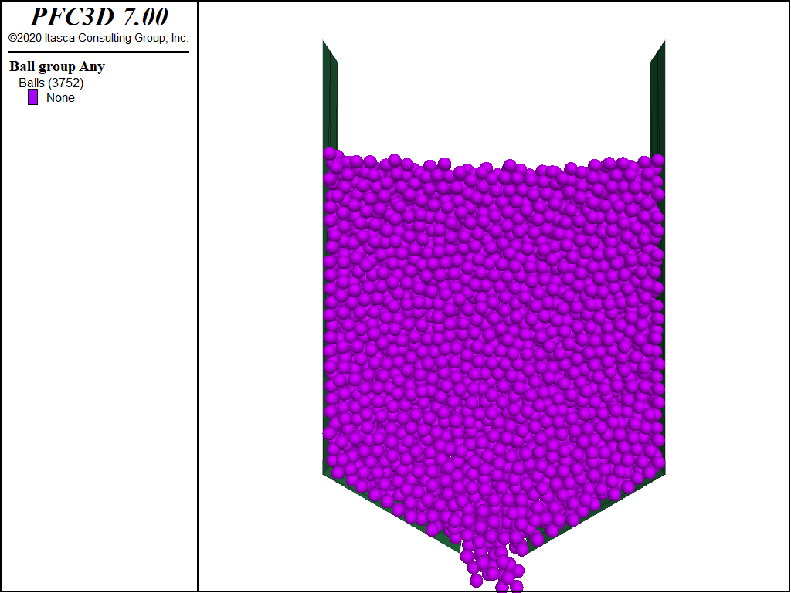
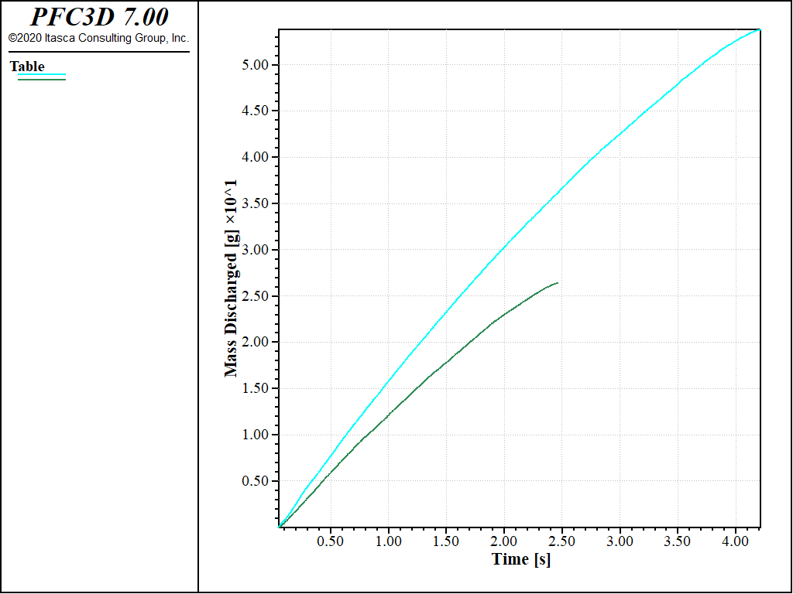
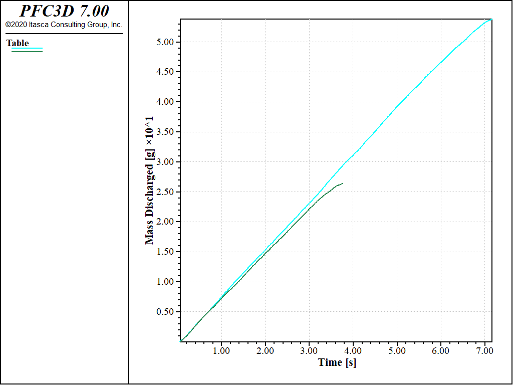

料斗流动
引言
注意
本算例的项目文件可在 PFC 中查看或运行。[1]所用的数据文件（data files）列于本算例末尾。
本例演示如何使用 PFC 模拟球形颗粒从料斗中卸出的过程。一个简单的料斗卸料模型在 料斗教程（hopper tutorial） 中给出。在该情形中，采用的是圆柱形料斗。在本例中，使用周期性边界来减小料斗几何形状的影响。通过参数化研究考察了摩擦和填充高度的影响；结果表明二者对料斗卸料速率和流动形态有显著影响。本例基于 [Anand2008] 和 [Ketterhagen2009] 的工作。
数值模型
料斗由 FISH 函数 build_hopper 创建并填充，该函数定义于“hopper_utilities.dat”中。为高效地建立初始系统，使用了 砖块（brick） 逻辑。砖块是在周期性空间中构建的球颗粒和/或刚性簇试样。砖块中不能存在墙体。因此，可以将砖块彼此相邻放置，使它们完美拼接而不会因重叠引入作用力。
料斗几何形状如 图 1（Figure 1） 所示。模型在周期性方向上的深度设为平均颗粒直径的五倍。料斗在 x 方向和 z 方向上的尺寸也设为平均颗粒直径的整数倍。
使用 墙体生成多边形（wall generate polygon） 命令生成料斗几何形状。当模型组成部分在周期性方向上贯穿整个计算域时，必须特别小心。在这种情况下，大尺寸物体与周期性摆放的物体之间可能不会形成接触。因此，在周期性方向上必须将墙体分解为多个面片，以避免出现此类情况。


图 1：填充后的料斗，其中通过指定分组来描绘水平层。
料斗卸料模拟
使用 动作（Action） FISH 函数开展卸料试验。
fish define Action(fill_level,key)
z_min = fill_level*H / 100.0
z_max = 2*H
command
ball delete range position-z [z_min] [z_max]
endcommand
discharged_mass = 0
filename = 'fill_'+string(int(fill_level))+'_'+key
command
model cycle 5000 calm 50
model solve ratio-average 1e-3
ball attribute damp 0.0
wall delete range set id 1001 1002
model mechanical time-total 0.0
model mechanical timestep auto
model results interval mechanical 0.1 prefix [key]
wall results active true
ball results add-attribute velocity active true
fish callback add MeasureDischargedMass event ball_delete
program echo off
model solve fish-halt HaltControl
program echo on
fish callback remove MeasureDischargedMass event ball_delete
model save [filename]
endcommand
end
通过 充填高度（fill_level） 参数可将料斗填充至不同高度。高于目标 充填高度（fill_level） 的球颗粒将被删除，随后系统达到平衡。之后针对模拟的卸料阶段将局部阻尼设置为零（参见 ball attribute 命令），移除底部盖板，并将力学时间归零（参见 模型力学总时间命令（model mechanical time-total） 命令）。在开始卸料之前，使用 设置球体结果输出（ball results） 命令定期记录模型状态的精简版本。在本算例中，记录的内容包括球颗粒的分组标识符和速度，以及球颗粒的位置和半径。
模拟过程中，通过为某个回调事件注册 FISH 函数来测量卸出的质量（参见 设置FISH回调命令（fish callback） 命令）。当球颗粒到达 z 方向的负向域边界时，将根据 设置模型域命令（model domain） 命令设置的条件将其删除。FISH 函数 测量排出质量（MeasureDischargedMass） 注册在 ball_delete 事件上。每当有球颗粒被删除，该 FISH 函数便会以传入的球颗粒指针为参数执行。通过这种方式可累加每个被删除球颗粒的质量。同时填充一个表格，记录卸出质量随力学时间的变化。
fish define MeasureDischargedMass(bp)
global discharged_mass
discharged_mass = discharged_mass + ball.mass.real(bp)
command
table [filename] insert [mech.time.total] [discharged_mass]
endcommand
end
当剩余球颗粒很少时，模拟通过 模型求解 FISH 停止命令（model solve fish-halt） 命令停止。这样可将 FISH 函数与求解逻辑关联起来，使循环持续进行，直至满足指定条件为止。为使循环终止，该 FISH 函数必须返回非零值。当为 FISH 函数名赋值时，FISH 函数便返回一个值。例如，语句 停止控制（HaltControl） = 局部变量 temp（temp） 即赋予该返回值。一旦达到求解限制，记录卸出质量随时间变化的表格便会导出为 .tab 文件以供进一步分析（参见 导出表格命令（table export） 命令）。
fish define HaltControl
local temp = 0
if ball.num < 5
command
table [filename] export [filename]
endcommand
temp = 1
endif
HaltControl = temp
end
重复模拟
“hopper_doall.dat”数据文件使用不同的关注参数执行料斗卸料模拟。更准确地说，在改变摩擦系数（下文将相应工况称为 高摩擦 与 低摩擦）以及料斗填充高度的同时，重复进行料斗卸料。借此可考察这些参数对颗粒流动类型（例如整体流与漏斗流）以及对质量卸出速率的影响。
图 2（Figures 2） 和 3 分别给出了低摩擦与高摩擦工况下卸料过程中的流动形态。这两种流动形态在性质上有所不同，随着摩擦增大，流动由整体流转变为漏斗流。


图 2：低摩擦条件下形成的均匀整体流形态。


图 3：高摩擦条件下形成的漏斗流形态。
图 4（Figures 4） 和 5 分别给出了低摩擦与高摩擦工况下两种填充高度时卸料速率的变化过程。蓝色线条表示完全充满的料斗；绿色线条对应料斗填充至总高度一半的情况。对于低摩擦工况，卸料速率随填充高度增大而增大。当摩擦系数较大时，卸料速率与填充高度基本无关。这些结果与 [Anand2008] 和 [Ketterhagen2009] 的结论一致。


图 4：低摩擦系数工况下料斗卸出质量随时间的变化。质量卸出 速率的大小与料斗的填充高度（蓝线——完全充满，绿线——填充一半） 密切相关。


图 5：高摩擦系数工况下料斗卸出质量随时间的变化。填充高度 （蓝线——完全充满，绿线——填充一半）对质量卸出速率的影响很小。
制作模拟动画
如上所述，已利用 设置球体结果输出（ball results） 命令定期保存模型的精简状态。这些结果文件可有效地用于模拟的后处理，从而能够可视化系统的演化过程。此外，由于球颗粒可以被重建，因此可使用与模拟过程中所用类似的 FISH 函数重新运行分析。也可以创建一系列图像。函数 生成影片（makeMovie） 定义在“hopper_utilities.dat”中，说明了如何实现这一点。
fish define makeMovie(fname)
global rmap
command
model result map rmap
endcommand
cnt = 1
loop foreach local res rmap
local str = string.build("%1%2.png",fname,cnt)
cnt = cnt + 1
command
model result import [res] skip-fish
plot export bitmap filename [str]
endcommand
endloop
end
随后可使用第三方工具将这些图像合成为动画。
讨论
本算例说明了使用 PFC 开展参数化研究的几个重要方面。自定义的求解限制以及因回调事件发生而触发的 FISH 函数执行，可用于管理模拟并收集相关数据。若没有这类工具，开展此类研究将非常困难。
参考文献
| [Anand2008] | (1, 2) Anand A.、Curtis J.S.、Wassgren C.R.、Hancock B.C.、Ketterhagen W.R.，“采用离散元方法（DEM）预测矩形料斗的卸料动力学”（Predicting discharge dynamics from a rectangular hopper using the discrete element method (DEM)），载于 Chemical Engineering Science，第 63 卷，第 5821-5830 页，2008 年。 |
| [Ketterhagen2009] | (1, 2) Ketterhagen W.R., Curtis J.S., Wassgren C.R., Hancock B.C.，“用离散元方法预测料斗中的流动模式”（Predicting the flow mode from hoppers using the discrete element method），载于 Powder Technology，第 195 卷，第 1-10 页，2009 年。 |
数据文件
hopper_doall.dat
; 文件名：Hopper_doall.p3dat
;
; 矩形料斗中的颗粒流动。
; 研究料斗摩擦与颗粒摩擦的影响，
; 并表明二者对料斗卸料行为有显著影响
;============================================================================
model new
program call 'Hopper_utilities' suppress
;------------ 低摩擦工况
[build_hopper(0.05,0.01,30.0)]
model save 'hopper_ini'
[Action(50,'LowFriction1')]
model restore 'hopper_ini'
[Action(100,'LowFriction2')]
model save 'LowFrictionHopper'
;------------高摩擦工况
model restore 'hopper_ini'
ball property 'fric' 0.8
wall property 'fric' 0.8
[Action(50,'HighFriction1')]
model restore 'hopper_ini'
ball property 'fric' 0.8
wall property 'fric' 0.8
[Action(100,'HighFriction2')]
model save 'HighFrictionHopper'
;==============================================================================
; 文件结束：Hopper_doall.p3dat
hopper_utilities.dat
model large-strain on
; 文件名：Hopper_utilities.p3dat
;
; 料斗模拟工具函数
; ============================================================================
fish define build_hopper(fric,brad,theta)
local cfric = fric
;
ballRadius = brad
W0 = ballRadius*10
W = W0*5.0
H = W*1.50
d = ballRadius*5.0
B = (W-W0)*0.5
theta = 30*math.pi/180
A = B*math.tan(Theta)
command
; 构建砖块
model domain condition periodic
model domain extent ([-W/4],[W/4]) ([-d], [d]) (0,[W/4])
contact cmat default model linear ...
property kn 1e4 ks 5e3 fric [cfric] dp_nratio 0.2
contact cmat default type ball-facet model linear ...
property kn 1.5e4 ks 7.5e3 fric [cfric] dp_nratio 0.2
ball distribute bin 1 radius [ballRadius]
ball attribute density 2500 damp 0.7
model cycle 1000 calm 10
model mechanical timestep scale
model solve
brick make id 1
; 删除已有球，构建料斗并组装砖块
ball delete
model domain condition destroy periodic destroy
model domain extent ([-W/2],[W/2]) ([-d],[d]) ([-d],[H*2.0])
wall generate group 'leftlateral_1' polygon ...
([-W/2],[-d],[A]) ([-W/2],0.0,[A]) ([-W/2],[-d],[H]) ([-W/2],0.0,[H])
wall generate group 'leftlateral_2' polygon ...
([-W/2],0.0,[A]) ([-W/2],[d],[A]) ([-W/2],0.0,[H]) ([-W/2],[d],[H])
wall generate group 'rightlateral_1' polygon ...
([W/2],[-d],[A]) ([W/2],0.0,[A]) ([W/2],[-d],[H]) ([W/2],0.0,[H])
wall generate group 'rightlateral_2' polygon ...
([W/2],0.0,[A]) ([W/2],[d],[A]) ([W/2],0.0,[H]) ([W/2],[d],[H])
wall generate group 'leftbottom_1' polygon ...
([-W0/2],[-d],0.) ([-W0/2],0.0,0.0) ([-W/2],[-d],[A]) ([-W/2],0.0,[A])
wall generate group 'leftbottom_2' polygon ...
([-W0/2],0.0,0.0) ([-W0/2],[d],0.0) ([-W/2],0.0,[A]) ([-W/2],[d],[A])
wall generate group 'rightbottom_1' polygon ...
([W0/2],[-d],0.0) ([W0/2],0.0,0.0) ([W/2],[-d],[A]) ([W/2],0.0,[A])
wall generate group 'rightbottom_2' polygon ...
([W0/2],0.0,0.0) ([W0/2],[d],0.0) ([W/2],0.0,[A]) ([W/2],[d],[A])
wall generate id 1001 group 'cap' polygon ...
([-W0/2],[-d],0) ([W0/2],[-d],0.0) ([-W0/2],0.0,0.0) ([W0/2],0.0,0.0)
wall generate id 1002 group 'cap' polygon ...
([-W0/2],0.0,0.0) ([W0/2],0.0,0.0) ([-W0/2],[d],0.0) ([W0/2],[d],0.0)
brick assemble id 1 origin ([-W/2],[-d],0.0) size 2 1 6
ball delete range plane origin ([-W0/2],0.0,0.0) ...
dip 30.0 dip-direction 90.0 below
ball delete range plane origin ([ W0/2],0.0,0.0) ...
dip -30.0 dip-direction 90.0 below
ball attribute density 2500 damp 0.7
model clean
[trim]
model gravity 0 0 -9.81
model history name '1' mech ratio-average
model cycle 1000 calm 100
model solve ratio-average 1e-3
ball group 'LevelOne' range position-z 0.0 [H/6]
ball group 'LevelTwo' range position-z [H/6][2*H/6]
ball group 'LevelThree' range position-z [2*H/6][3*H/6]
ball group 'LevelFour' range position-z [3*H/6][4*H/6]
ball group 'LevelFive' range position-z [4*H/6][5*H/6]
ball group 'LevelSix' range position-z [5*H/6][2*H]
endcommand
end
fish define trim
loop foreach local c contact.list('ball-facet')
local bp = contact.end1(c)
ball.delete(contact.end1(c))
endloop
end
; excerpt-wnro-start
fish define MeasureDischargedMass(bp)
global discharged_mass
discharged_mass = discharged_mass + ball.mass.real(bp)
command
table [filename] insert [mech.time.total] [discharged_mass]
endcommand
end
; excerpt-wnro-end
; excerpt-prpp-start
fish define HaltControl
local temp = 0
if ball.num < 5
command
table [filename] export [filename]
endcommand
temp = 1
endif
HaltControl = temp
end
; excerpt-prpp-end
; excerpt-yurt-start
fish define Action(fill_level,key)
z_min = fill_level*H / 100.0
z_max = 2*H
command
ball delete range position-z [z_min] [z_max]
endcommand
discharged_mass = 0
filename = 'fill_'+string(int(fill_level))+'_'+key
command
model cycle 5000 calm 50
model solve ratio-average 1e-3
ball attribute damp 0.0
wall delete range set id 1001 1002
model mechanical time-total 0.0
model mechanical timestep auto
model results interval mechanical 0.1 prefix [key]
wall results active true
ball results add-attribute velocity active true
fish callback add MeasureDischargedMass event ball_delete
program echo off
model solve fish-halt HaltControl
program echo on
fish callback remove MeasureDischargedMass event ball_delete
model save [filename]
endcommand
end
; excerpt-yurt-end
; excerpt-qonr-start
fish define makeMovie(fname)
global rmap
command
model result map rmap
endcommand
cnt = 1
loop foreach local res rmap
local str = string.build("%1%2.png",fname,cnt)
cnt = cnt + 1
command
model result import [res] skip-fish
plot export bitmap filename [str]
endcommand
endloop
end
; excerpt-qonr-end
;==============================================================
; 文件结束：Hopper_utilities.p3dat
尾注
| [1] | 要在 PFC 中查看本项目，请使用程序菜单。
⮡ PFC |
| 这些内容对您有帮助吗？… 版权与免责声明 |
FLAC3D © 2019, Itasca | 原文更新于 2020 年 10 月 8 日 |